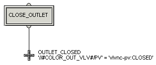

Add a transition to the FILL running logic
- Move the termination icon to the bottom of the diagram and delete the connecting line.
- Drag a transition icon from the palette to the spot where the termination was.
- Rename the transition to OUTLET_CLOSED (to wait until the outlet valve is closed).
- Double-click the transition. The Properties dialog opens.
- Open the Expression Assistant. Delete the default condition of False, select Insert Alias, and browse in Tanks > COLOR for the alias COLOR_OUT_VLV/PV.
- Type an equals sign (=) or use the button provided.
-
To construct the right side of the transition condition, select Insert Named State, and browse for vlvnc-pv:CLOSED.
The expression now reads:
'//#COLOR_OUT_VLV#/PV' = 'vlvnc-pv:CLOSED'
- Click Parse to check the expression and correct any errors.
- Click OK in the Expression Editor and Properties dialogs.
-
Draw a line from the first step to the transition. The cursor automatically turns into an asterisk when it is in the correct position for drawing lines.
